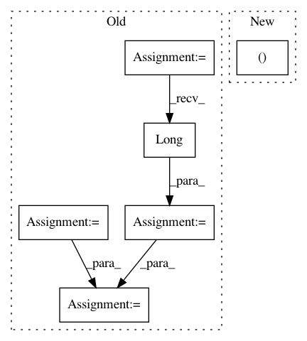

6ddf825a4aa1bcf3a35bba8d36bc433fe5ebaa39,torchsample/utils.py,,th_nearest_interp_3d,#Any#Any#,285
Before Change
// repeat coords along channel dim if not given that way
if coords.dim() == 2:
coords = coords.unsqueeze(0).repeat(input.size(0),1,1)
// take clamp of coords so they"re in the image bounds
xc = torch.clamp(coords[:,:,0], 0, input.size(1)-1)
yc = torch.clamp(coords[:,:,1], 0, input.size(2)-1)
zc = torch.clamp(coords[:,:,2], 0, input.size(3)-1)
// round to nearest coordinate
coords = torch.stack([xc.round().long(),
yc.round().long(),
zc.round().long()], 2)
// gather image values at coordinates
mapped_vals = torch.stack([th_gather_nd(input[i], coords[i])
for i in range(input.size(0))], 0)
return mapped_vals.view_as(input)
After Change
2d nearest neighbor interpolation torch.Tensor
// take clamp of coords so they"re in the image bounds
coords[:,0] = torch.clamp(coords[:,0], 0, input.size(1)-1).round()
coords[:,1] = torch.clamp(coords[:,1], 0, input.size(2)-1).round()
coords[:,2] = torch.clamp(coords[:,2], 0, input.size(3)-1).round()
In pattern: SUPERPATTERN
Frequency: 3
Non-data size: 6
Instances
Project Name: ncullen93/torchsample
Commit Name: 6ddf825a4aa1bcf3a35bba8d36bc433fe5ebaa39
Time: 2017-04-24
Author: ncullen@Nicks-MacBook-Pro.local
File Name: torchsample/utils.py
Class Name:
Method Name: th_nearest_interp_3d
Project Name: arraiy/torchgeometry
Commit Name: 73a339fac0a9574ee16527ebf9b6d71073bb688b
Time: 2019-01-14
Author: kaplanonu@gmail.com
File Name: torchgeometry/conversions.py
Class Name:
Method Name: convert_points_to_homogeneous
Project Name: mozilla/TTS
Commit Name: e02fc51fde25ad2a66f630f79a5d6b8a8c9fedc7
Time: 2019-08-23
Author: egolge@mozilla.com
File Name: server/synthesizer.py
Class Name: Synthesizer
Method Name: tts